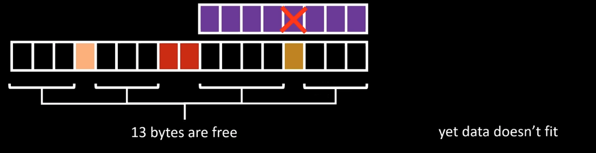
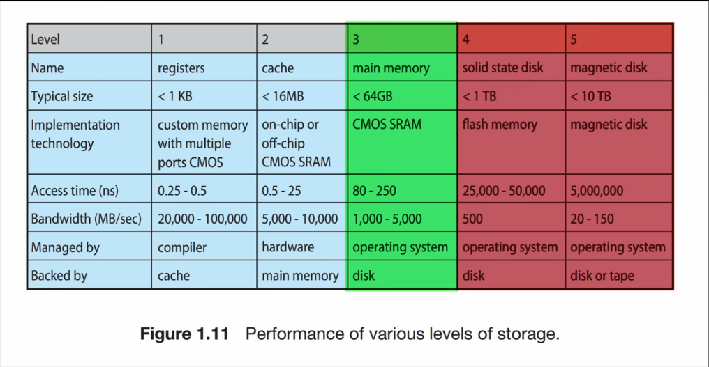
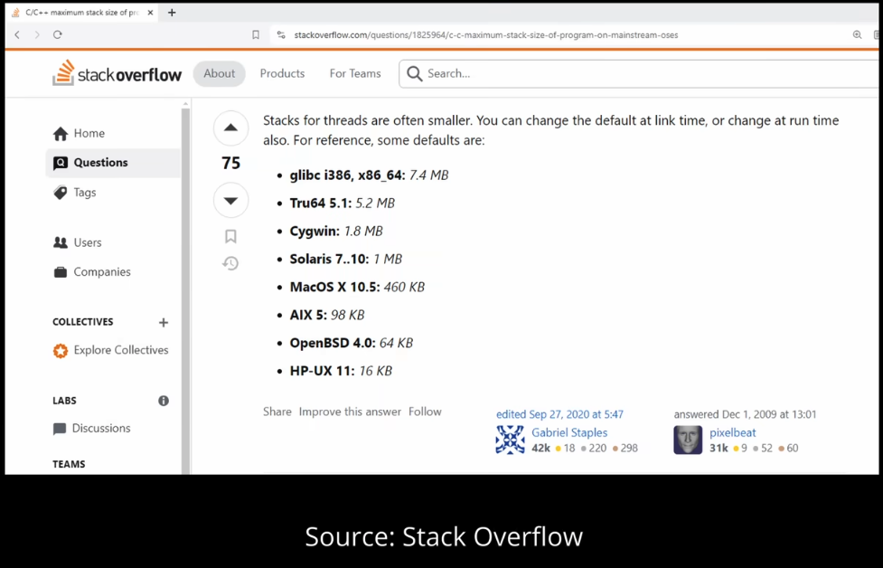
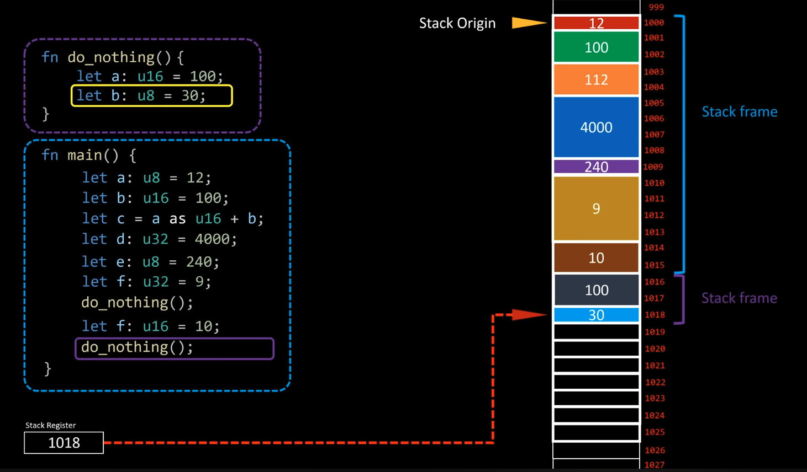

Why stack is so fast?
-
stack is aka: program stack, call stack, execution stack.
-
a program (executable) must ask the OS for memory space. The OS allocates it, but while running, if the program tries to access memory it shouldn’t, the OS terminates it with Segmentation Fault (core dumped).
-
external fragmentation: memory exists, but we still run out of usable space due to bad allocation patterns.

-
requesting more memory takes time; hence using the heap gives a performance hit.
- if main memory (RAM) is exhausted, the OS gives storage-backed memory (aka virtual memory), but storage is thousands of times slower than RAM.

- even fetching data from main memory has a noticeable cost, hence we have CPU caches (different from registers).
- if data is present in cache → cache hit; otherwise → cache miss (CPU stalls while data is fetched from main memory).
-
hence keeping data compact and contiguous is beneficial to maximize cache hits (this is locality: spatial + temporal).

-
the size of the preallocated stack region depends on the compiler / OS / platform.

might seem small, but
1 MB = 1,048,576 bytes → 1,048,576 / 8 = 131,072 64-bit integers.
- stack is a contiguous memory region:
- beginning of stack = stack origin
- the stack pointer (SP) keeps track of the top (yes, it usually grows downwards).
-
the stack pointer must be stored somewhere → it lives in a CPU register.
-
stack allocation is extremely cheap:
- allocation = adjust stack pointer (
SP +=/-= size) - no OS call, no searching for free blocks
-
heap allocation requires OS involvement, metadata, bookkeeping, and fragmentation-handling strategies → slower.
-
when a function is called:
- a stack frame is pushed onto the stack.

- it contains:
- local variables
- function arguments (depending on ABI)
- saved registers
- return address (return-link)
-
the starting point of the frame must be tracked so that after function completion, the stack pointer can be reset correctly.
-
in recursion, if there is no base case:
- new stack frames keep getting added
-
eventually, the stack runs out of space → stack overflow.
-
each thread has its own stack:
- pros: no synchronization needed for local variables
- cons: fixed size per thread, memory overhead
- this is one of the reasons shared data structures usually live on the heap.